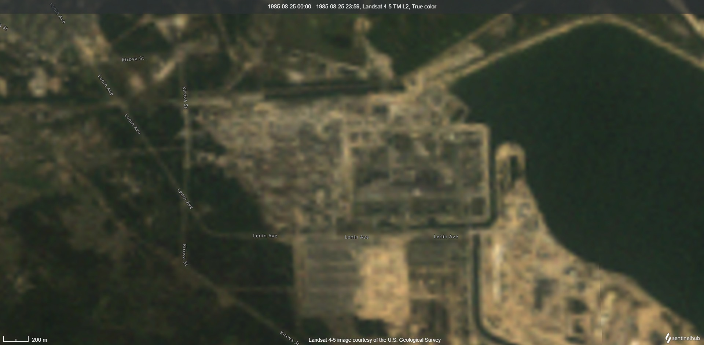
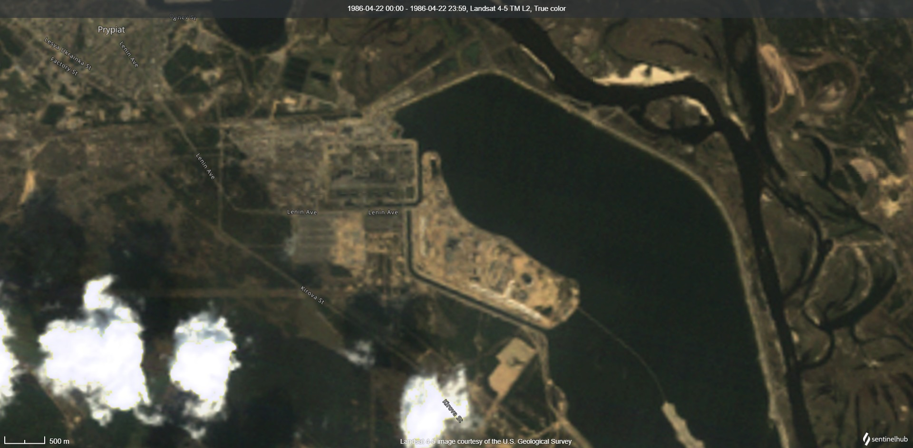
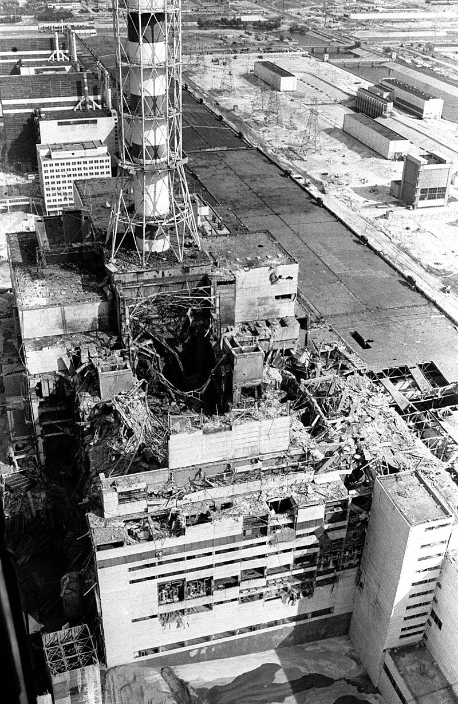
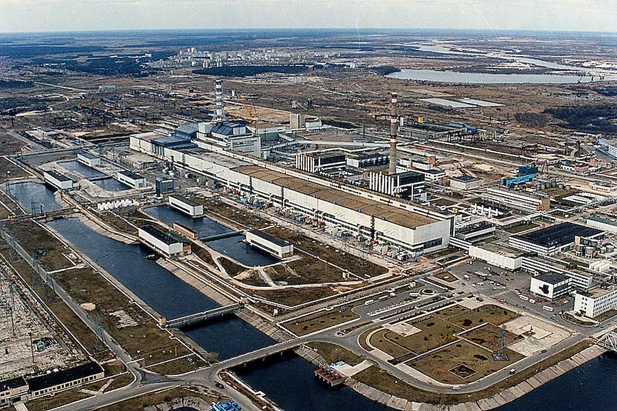
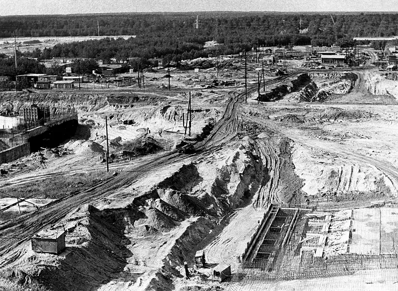
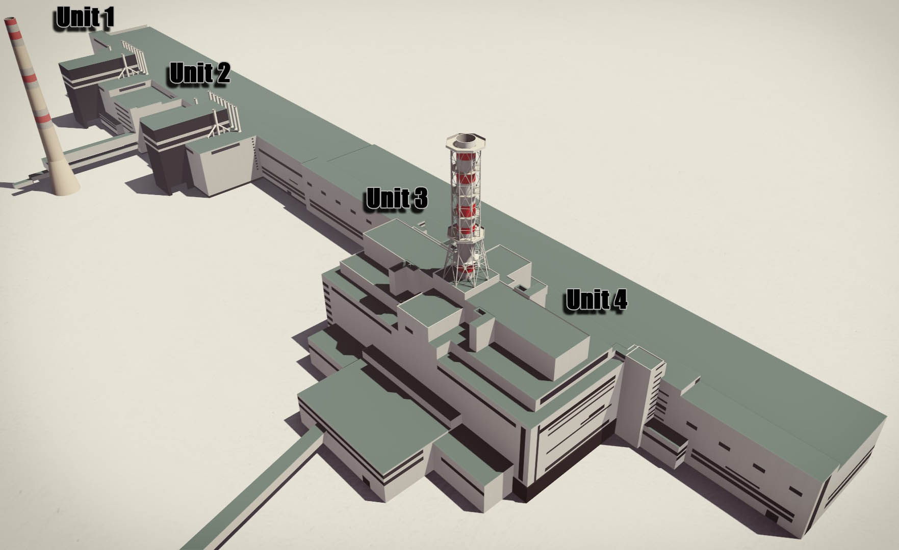
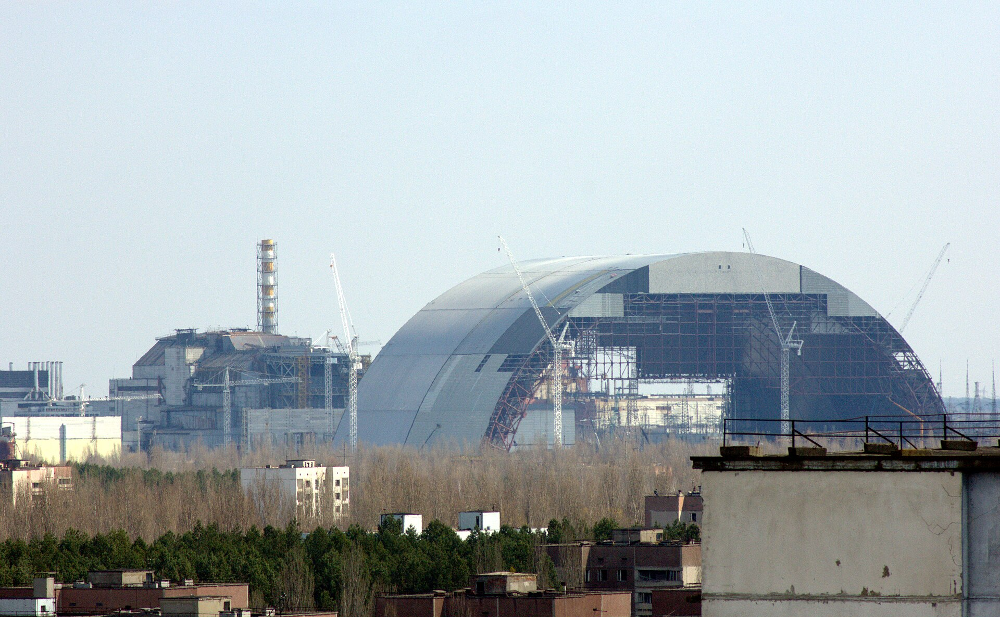
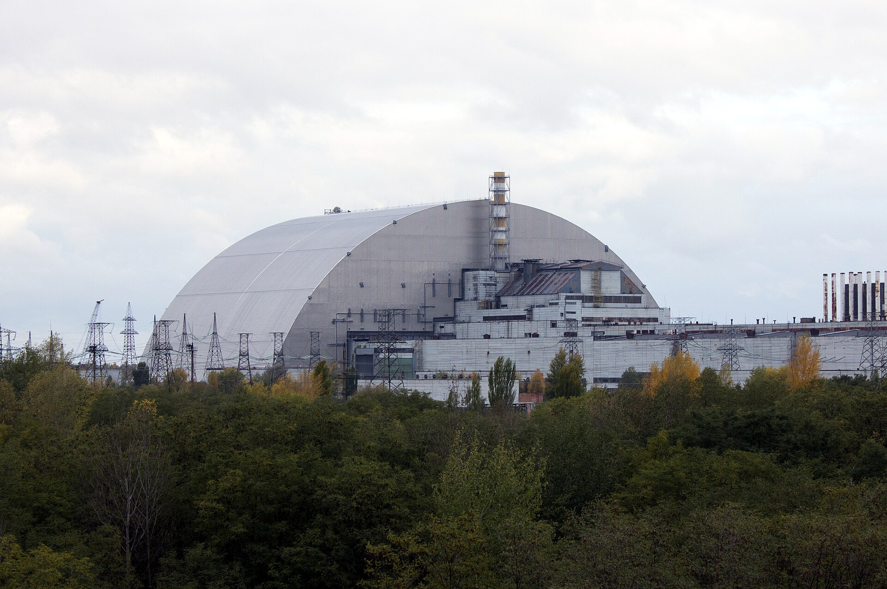
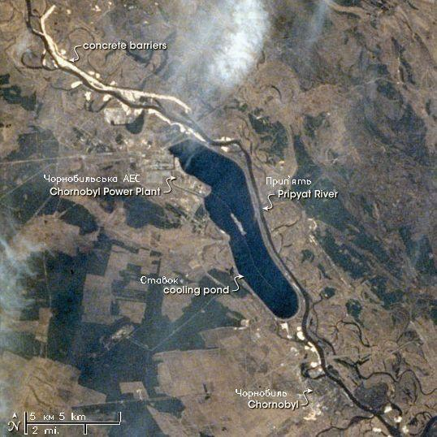

Explore the complete story of Chernobyl — from Soviet ambition and deadly design flaws to the 1986 explosion, heroic liquidators, political fallout, the 2025 drone strike, and nature’s surprising rebirth.
🧩
La Storia: Il Disastro di Chernobyl
Esplora l'intera vicenda di Chernobyl — dall'ambizione sovietica e i difetti progettuali fatali, all'esplosione del 1986, il sacrificio dei liquidatori, le ripercussioni politiche, l'attacco con drone del 2025 e la sorprendente rinascita della natura.
⚛️
How Nuclear Power Works ?
Dive into the science of fission and fusion, the dangers of outdated reactors, modern safety advances, and how nuclear energy may shape the planet’s clean energy future.
⚛️
Come Funziona l'Energia Nucleare ?
Approfondisci la scienza della fissione e fusione nucleare, i rischi dei vecchi reattori, i moderni progressi nella sicurezza e il ruolo del nucleare nel futuro energetico sostenibile del pianeta.
🖼️
Chernobyl in Images
An evolving collection of historical and modern photographs of the Chernobyl disaster site, the liquidators, the city of Pripyat, and the changing face of the Exclusion Zone.
🖼️
Chernobyl in Immagini
Una raccolta in continua evoluzione di fotografie storiche e moderne del sito del disastro di Chernobyl, dei liquidatori, della città di Pripyat e del volto mutevole della Zona di Esclusione.
🧩 The Story: Chernobyl Disaster
🏗️ A Soviet Dream, Doomed by Design
In the 1970s, the Soviet Union launched a flagship nuclear project in northern Ukraine: the Chernobyl Nuclear Power Plant. It was meant to showcase the USSR’s technological strength. The nearby city of Pripyat was built to house 49,000 workers and their families — a model Soviet utopia.
But the plant's RBMK-1000 reactors had deadly flaws:
⚠️ Unstable at low power
⚠️ Graphite-tipped control rods could spike reactivity
⚠️ No steel-reinforced containment building like Western reactors
These design issues, combined with human error and secrecy, would lead to the worst nuclear disaster in history.
💥 April 26, 1986: The Explosion That Changed Everything
A safety test was scheduled to determine whether the plant’s turbines could power cooling systems during a blackout. The test was delayed and began late at night under an inexperienced crew. Operators disabled critical safety systems. When the AZ-5 shutdown button was finally pressed, the graphite tips of the control rods caused a massive surge in power.
💥 Reactor 4 exploded.
🔥 A second explosion followed, likely from hydrogen buildup.
☢️ Radioactive materials were launched into the night sky.
🧱 The reactor lid — weighing 1,000 tons — was blown off.
☢️ The Fallout Begins
🚒 First responders arrived with no protective gear. Many would soon collapse from Acute Radiation Syndrome.
💀 28 people died within weeks.
🏚️ Pripyat was evacuated 36 hours later. Residents were told to pack for three days. Most never returned.
🌬️ Radiation spread across Belarus, Russia, and Europe.
🇸🇪 Sweden detected rising levels and forced the Soviet Union to admit the disaster.
🧑🔧 Who Were the Liquidators?
To stop the crisis from escalating, over 600,000 “liquidators” — including soldiers, firefighters, miners, and volunteers — were deployed. They:
🔨 Built a concrete sarcophagus over the destroyed reactor
🧹 Cleared radioactive debris, often by hand
⏱️ Worked in seconds-long shifts on the roof to avoid fatal exposure
Many suffered long-term health issues. Their sacrifice helped prevent a second explosion and further fallout. Recognition was often delayed.
🏛️ The USSR: A Cracking Superpower
Chernobyl revealed deep dysfunction in the Soviet system:
🔒 Delayed response due to secrecy
🚫 Suppressed information and internal warnings
📉 Collapse of public trust
Mikhail Gorbachev later said the disaster contributed to the fall of the Soviet Union in 1991. Chernobyl became a symbol of the limits of authoritarian control in the face of science and truth.
🚁 February 14, 2025: Drone Strike on Chernobyl
At 1:50 AM on February 14, 2025, a drone reportedly carrying a high-explosive warhead struck the New Safe Confinement — the massive steel dome that covers Reactor 4.
🔥 The blast caused a fire inside the outer insulation
🕳️ A breach was made in the structure’s outer shell
🧯 Fires were contained quickly; no radiation was released
🛑 There were no casualties
🇺🇦 Ukrainian President Volodymyr Zelenskyy blamed Russian forces, calling it a targeted act of nuclear terrorism. 🇷🇺 Russia denied responsibility.
The IAEA confirmed that the internal containment structure remained intact. Repairs began in early March 2025.
🌿 Life Returns: An Ecological Rebirth
Despite radioactive contamination, the Chernobyl Exclusion Zone — a 2,600 km² area — has become one of Europe’s most unexpected wildlife sanctuaries.
🦊 Wolves, lynx, and bears have returned
🕊️ Over 200 bird species nest in the region
🌾 Forests and meadows have overgrown abandoned towns
With humans gone, ecosystems rebounded — sometimes more quickly than expected. It’s become a live study of how nature reclaims human-abandoned space.
🌱 Why Plants Survive What Kills Us
Unlike animals, plants are surprisingly resilient to radiation. According to plant biochemist Stuart Thompson, plants evolved in times of higher natural radiation and still carry ancient tools for survival.
🔬 What Radiation Does
💥 Shatter DNA
🧬 Cause mutations or cellular death
🌿 What Makes Plants Tough
🌱 Flexible development: Many plant cells can turn into any other cell type
🔄 Built-in adaptability: Growth patterns change in response to stress
🧬 Ancient adaptations: Their DNA can repair itself, or be shielded chemically
“Radiation harms plants, but removing humans helped more.” — Stuart Thompson, University of Westminster
🧠 Takeaways from Chernobyl
⚛️ Nuclear Reform: International safety standards improved; modern reactor designs emphasize passive safety and containment
🏛️ Political Fallout: Chernobyl helped collapse the Soviet narrative of control; public trust in centralized secrecy never recovered
🌳 Environmental Insight: Nature bounced back in the absence of people; scientists continue studying long-term ecosystem responses
🎬 Cultural Legacy: HBO’s Chernobyl (2019) reignited global awareness; the disaster lives on in books, games, documentaries, and activism
La Storia: Il Disastro di Chernobyl
🏗️ Un Sogno Sovietico, Condannato dal Design
Negli anni '70, l'Unione Sovietica avviò un ambizioso progetto nucleare nel nord dell'Ucraina: la centrale nucleare di Chernobyl. Doveva essere una dimostrazione della potenza tecnologica sovietica. La vicina città di Pripyat fu costruita per ospitare 49.000 lavoratori e le loro famiglie — una vera utopia sovietica.
Ma i reattori RBMK-1000 della centrale presentavano difetti letali:
⚠️ Instabilità a bassa potenza
⚠️ Le barre di controllo con punta in grafite potevano aumentare la reattività
⚠️ Nessuna struttura di contenimento in acciaio come nelle centrali occidentali
Questi problemi di progettazione, combinati con errori umani e segretezza, portarono al peggior disastro nucleare della storia.
💥 26 Aprile 1986: L'Esplosione che Cambiò Tutto
Un test di sicurezza era stato programmato per verificare se le turbine della centrale potessero alimentare i sistemi di raffreddamento in caso di blackout.
Il test fu ritardato e iniziò di notte con una squadra inesperta. Gli operatori disabilitarono i sistemi di sicurezza. Quando fu premuto il pulsante di arresto di emergenza AZ-5, le punte in grafite delle barre di controllo causarono un enorme picco di potenza.
💥 Il Reattore 4 esplose.
🔥 Seguì una seconda esplosione, probabilmente dovuta all’accumulo di idrogeno.
☢️ Materiali radioattivi furono lanciati nel cielo notturno.
🧱 Il coperchio del reattore — 1.000 tonnellate — fu scagliato in aria.
☢️ Le Conseguenze Immediate
🚒 I primi soccorritori arrivarono senza protezioni adeguate. Molti crollarono presto per la sindrome acuta da radiazioni.
💀 28 persone morirono entro poche settimane.
🏚️ Pripyat fu evacuata 36 ore dopo. Ai residenti fu detto di preparare le valigie per tre giorni. La maggior parte non fece mai ritorno.
🌬️ La radiazione si diffuse in Bielorussia, Russia ed Europa.
🇸🇪 La Svezia rilevò livelli anomali e costrinse l’URSS ad ammettere l'incidente.
🧑🔧 Chi Erano i Liquidatori?
Per fermare l’escalation della crisi, furono mobilitate oltre 600.000 persone — soldati, vigili del fuoco, minatori e volontari — noti come “liquidatori”.
🔨 Costruirono un sarcofago in cemento sul reattore distrutto
🧹 Rimossero detriti radioattivi, spesso a mano
⏱️ Lavorarono sul tetto in turni di pochi secondi per evitare l'esposizione letale
Molti subirono gravi problemi di salute. Il loro sacrificio evitò una seconda esplosione. Il riconoscimento arrivò solo anni dopo.
🏛️ L'URSS: Un Superpotere che si Incrina
🔒 Ritardi nella risposta a causa della segretezza
🚫 Soppressione di informazioni e avvisi interni
📉 Crollo della fiducia pubblica
Michail Gorbaciov disse che il disastro contribuì alla caduta dell'Unione Sovietica nel 1991. Chernobyl divenne un simbolo dei limiti del controllo autoritario di fronte alla verità scientifica.
🚁 14 Febbraio 2025: Attacco con Drone a Chernobyl
🔥 L’esplosione causò un incendio nell’isolamento esterno
🕳️ Si aprì una breccia nel rivestimento esterno
🧯 Gli incendi furono contenuti rapidamente; nessuna radiazione fu rilasciata
🛑 Nessuna vittima
🇺🇦 Il Presidente ucraino Volodymyr Zelenskyy accusò le forze russe, definendo l’attacco terrorismo nucleare.
🇷🇺 La Russia negò ogni responsabilità.
🔍 L'AIEA confermò che la struttura interna di contenimento era rimasta intatta. Le riparazioni iniziarono a marzo 2025.
🌿 Ritorno della Vita: Rinascita Ecologica
Nonostante la contaminazione radioattiva, la zona di esclusione di Chernobyl — un’area di 2.600 km² — è diventata uno dei più sorprendenti santuari naturali d’Europa.
🦊 Lupi, volpi e orsi sono tornati
🕊️ Più di 200 specie di uccelli nidificano nella zona
🌾 Foreste e praterie hanno ricoperto le città abbandonate
Con la scomparsa dell’uomo, gli ecosistemi si sono ripresi — spesso più in fretta del previsto. È uno studio vivente di come la natura si riprende gli spazi lasciati dall’uomo.
🌱 Perché le Piante Sopravvivono Dove gli Animali Muoiono
A differenza degli animali, le piante sono sorprendentemente resistenti alle radiazioni.
Secondo il biochimico delle piante Stuart Thompson, si sono evolute in epoche in cui la radiazione naturale era più alta — e hanno mantenuto strumenti antichi per sopravvivere.
💥 Frammentano il DNA
🧬 Causano mutazioni o morte cellulare
Negli animali può provocare tumori e collasso degli organi. Nelle piante, è diverso.
🌿 Cosa Rende le Piante Resilienti
🌱 Sviluppo flessibile: Le cellule vegetali possono trasformarsi in altri tipi di cellule
🧱 I tumori non si diffondono: Le pareti cellulari impediscono l'espansione
🔄 Adattabilità interna: Le piante cambiano crescita e forma in risposta allo stress
🧬 Adattamenti antichi: Il DNA può ripararsi o proteggersi chimicamente
“Radiation harms plants, but removing humans helped more.” — Stuart Thompson, University of Westminster
🧠 Cosa Ci Insegna Chernobyl
⚛️ Riforma Nucleare
✅ Standard internazionali di sicurezza migliorati
✅ I reattori moderni privilegiano la sicurezza passiva e il contenimento
🏛️ Impatto Politico
📉 Chernobyl contribuì al crollo del sistema sovietico
🗳️ La fiducia pubblica nel controllo centralizzato fu erosa
🌳 Impatto Ambientale
🌲 La natura è tornata nei luoghi abbandonati
🧪 Gli scienziati continuano a studiare gli ecosistemi esposti
🎬 Eredità Culturale
📺 La serie HBO Chernobyl (2019) ha rinnovato l’interesse globale
📚 Il disastro continua a vivere in libri, giochi, documentari e attivismo
⚛️ How Nuclear Power Works
Nuclear power is the use of controlled nuclear reactions to generate heat and electricity. Unlike fossil fuel plants, which burn coal or gas, nuclear power plants rely on nuclear fission — the splitting of atoms — to release energy.
🔬 What Is Nuclear Power?
In fission, a heavy atomic nucleus (like uranium-235 or plutonium-239) absorbs a neutron, becomes unstable, and splits into two smaller atoms. This process releases:
🔥 Massive amounts of heat
➕ Free neutrons (which trigger further fission)
☢️ Radiation (contained inside the reactor)
This chain reaction is sustained and regulated inside a reactor core, turning water into steam to drive turbines and generate electricity.
⚙️ How a Nuclear Power Plant Works: Step by Step
Reactor Core 🔋 – The heart of the plant. It contains fuel rods packed with uranium or plutonium pellets. Each rod contains enough energy to power entire cities.
Fission Reaction ⚛️ – Neutrons collide with fuel atoms, causing them to split and release heat and more neutrons, sustaining the chain reaction.
Heat Transfer & Coolant Loop ♨️ – The heat from fission boils pressurized water or another coolant, which then transfers energy through a heat exchanger.
Steam Generation & Turbines ⚙️ – The heat turns water into steam, which spins massive turbines connected to electric generators.
Power Output & Grid Connection 🔌 – Electricity flows from the generator into high-voltage transmission lines and powers homes, businesses, and infrastructure.
Cooling & Condensation ❄️ – After spinning turbines, the steam is cooled in cooling towers and condensed back into water to repeat the cycle.
🧪 RBMK-1000: The Reactor Design Behind Chernobyl
The Chernobyl Nuclear Power Plant used a Soviet-designed RBMK-1000 reactor. It was intended to be powerful and cost-efficient, but it also had critical safety flaws.
Key Features of the RBMK:
🧱 Graphite Moderator – Slows down neutrons to sustain the fission reaction
💧 Light Water Coolant – Cools the reactor and transfers heat to turbines
☢️ Fuel – Enriched uranium-235
Dangerous Flaws:
⚠️ Positive Void Coefficient – If water turns to steam (a void), reactivity increases instead of decreasing — making the reactor more unstable at low power
❌ Control Rod Design – Graphite tips initially increase reactivity during insertion, which is what happened during the 1986 disaster
🚫 No Containment Structure – Western reactors are built inside thick concrete domes. RBMK reactors were not
These design issues — plus poor communication, operator error, and pressure from higher-ups — led directly to the Chernobyl explosion.
💡 Fission vs. Fusion: What’s the Difference?
🔬 Fission (Used Today)
Splits heavy atoms like uranium or plutonium
Releases a lot of energy
Produces radioactive waste
Can be dangerous if uncontrolled (e.g., Chernobyl)
☀️ Fusion (Still Experimental)
Combines light atoms like hydrogen to form helium
Powers the sun and stars
Much cleaner: produces little or no long-lived waste
Safer: reactions can’t runaway
Requires ultra-high temperatures (150+ million °C)
Fusion is still being researched (e.g., ITER project), but it could one day revolutionize clean energy.
🚀 What’s Next? Advanced Reactor Technologies
Generation III / III+ Reactors
🛡️ Enhanced safety systems (some are passive — no electricity needed)
⚙️ Greater efficiency
⏳ Longer fuel life
🌍 Already in use around the world (e.g., EPR, AP1000)
Generation IV Reactors (In development)
♻️ Sustainability: use less fuel, produce less waste
🛡️ Safety: walk-away-safe, auto shutdowns
🔄 Versatility: can use waste as fuel
Examples: Sodium-cooled fast reactors, molten salt reactors, gas-cooled reactors
Small Modular Reactors (SMRs) 🧩
🏗️ Compact, factory-built units
🗺️ Can be placed in remote or small communities
💰 Lower upfront cost, shorter construction time
🔁 Easier to scale and customize
🌍 Nuclear Power Around the World
⚙️ About 440 reactors operate in 30+ countries
⚡ Nuclear supplies ~10% of the world’s electricity
🌿 It's one of the lowest-carbon energy sources
In the face of climate change, nuclear is seeing renewed interest — especially as part of a net-zero carbon future. Some countries are shutting down plants, others are building more.
Nuclear is not without risks — but with modern designs, strong regulation, and international cooperation, it's a powerful tool in the global clean energy transition.
⚛️ Come Funziona l’Energia Nucleare
🔬 Cos'è l’Energia Nucleare?
L’energia nucleare sfrutta reazioni nucleari controllate per produrre calore e generare elettricità. A differenza delle centrali a combustibili fossili, le centrali nucleari non bruciano combustibile: usano la fissione nucleare — la divisione degli atomi — per liberare energia.
Durante la fissione, un nucleo atomico pesante (come l’uranio-235 o il plutonio-239) assorbe un neutrone, diventa instabile e si divide in due atomi più piccoli, rilasciando:
🔥 Calore
🧪 Neutroni liberi (che continuano la reazione a catena)
☢️ Radiazioni (contenute all'interno del reattore)
⚙️ Come Funziona una Centrale Nucleare
Una centrale nucleare funziona in modo simile a una centrale termica tradizionale: sfrutta il calore per trasformare acqua in vapore e far girare turbine.
Fasi principali:
Reattore 🔋 – Contiene barre di combustibile piene di uranio o plutonio. È il cuore della centrale.
Fissione Nucleare ⚛️ – I neutroni colpiscono gli atomi di combustibile, che si dividono e rilasciano calore.
Trasferimento del Calore ♨️ – L'acqua o un altro fluido assorbe il calore e lo trasporta a uno scambiatore.
Generazione di Vapore e Turbina ⚙️ – Il calore trasforma l'acqua in vapore, che fa girare le turbine.
Produzione di Energia Elettrica 🔌 – Le turbine sono collegate a generatori che producono elettricità.
Raffreddamento ❄️ – Il vapore viene raffreddato, condensato in acqua e reimmesso nel ciclo.
🧪 Il Reattore RBMK-1000: Il Caso di Chernobyl
La centrale di Chernobyl utilizzava un reattore sovietico di tipo RBMK-1000. Era potente ed economico da costruire, ma presentava difetti di sicurezza critici.
Caratteristiche principali:
🧱 Moderatore in grafite – Rallenta i neutroni per mantenere la reazione a catena.
💧 Raffreddamento ad acqua leggera – Rimuove il calore dal nucleo.
☢️ Combustibile – Uranio-235 arricchito.
Difetti gravi:
⚠️ Coefficiente di vuoto positivo – Quando l'acqua evapora in vapore (vuoto), la reattività aumenta, rendendo il reattore instabile.
❌ Barre di controllo mal progettate – Le punte in grafite iniziano la reazione prima di rallentarla.
🚫 Nessuna struttura di contenimento – A differenza dei reattori occidentali, non c’era un guscio in cemento per trattenere le radiazioni.
Queste debolezze — unite a errori umani e pressioni politiche — portarono direttamente all’esplosione del 1986.
💡 Fissione vs Fusione: Qual'è la Differenza?
Oggi utilizziamo la fissione nucleare, ma il futuro potrebbe essere la fusione.
🔬 Fissione (oggi)
Divide atomi pesanti come uranio o plutonio
Rilascia molta energia
Produce scorie radioattive
Può essere pericolosa (come a Chernobyl)
☀️ Fusione (sperimentale)
Unisce atomi leggeri come idrogeno per formare elio
È il processo che alimenta il Sole
Produce poca o nessuna scoria a lungo termine
È più sicura: la reazione si spegne da sola
Richiede temperature altissime (oltre 150 milioni °C)
La fusione è ancora in fase di ricerca (es. progetto ITER), ma potrebbe rivoluzionare l’energia pulita.
🚀 Il Futuro: Reattori Avanzati
I progetti moderni sono più sicuri, efficienti e sostenibili. Vengono classificati in “generazioni”.
🔹 Reattori di Terza Generazione (III / III+)
Sistemi di sicurezza avanzati (anche passivi)
Maggiore efficienza
Cicli di combustibile più lunghi
Già in uso (es. EPR, AP1000)
🔹 Reattori di Quarta Generazione (in sviluppo)
♻️ Sostenibili: meno scorie e più autonomia
🛡️ Più sicuri: auto-arresto in caso di guasto
🔄 Versatili: possono usare scorie come combustibile
Esempi: reattori veloci al sodio, al sale fuso, raffreddati a gas
🔹 Reattori Modulari Compatti (SMRs) 🧩
Compatti e prefabbricati
Installabili in zone remote
Costi iniziali più bassi
Facili da scalare o personalizzare
🌍 L’Energia Nucleare nel Mondo
🔢 Circa 440 reattori in funzione in oltre 30 paesi
⚡ Circa il 10% dell'elettricità mondiale viene dal nucleare
🌿 Una delle fonti più basse in emissioni di CO₂
Con l’aumento della crisi climatica, molti paesi stanno rivalutando il nucleare come energia di transizione verso un futuro a zero emissioni.
Chernobyl in Images
Chernobyl in Immagini

Chernobyl site - 1985-08-25
Sito di Chernobyl - 25/08/1985

Chernobyl site - 1986-04-22 (4 days before disaster)
Sito di Chernobyl - 22/04/1986 (4 giorni prima del disastro)
Chernobyl site - 1986-04-29 (3 days after disaster)
Sito di Chernobyl - 29/04/1986 (3 giorni dopo il disastro)
Chernobyl site - 1989-04-21
Sito di Chernobyl - 21/04/1989
Chernobyl site - 2000-05-05
Sito di Chernobyl - 05/05/2000
2000-06-06
2000-06-06
2022-03-18
2022-03-18
Aleksandr Akimov
Aleksandr Akimov
Aleksandr Akimov with colleagues
Aleksandr Akimov con colleghi
Anatoly Dyatlov
Anatoly Dyatlov
Boris Shcherbina
Boris Shcherbina

Reactor 4 After the Explosion
Reattore 4 dopo l'esplosione

Chernobyl Plant Before the Disaster
La centrale di Chernobyl prima del disastro
Chernobyl 30 Years Later
Chernobyl 30 anni dopo
Chernobyl Aftermath
Chernobyl dopo il disastro

Construction of Chernobyl
Costruzione della centrale
Site Development Phase
Sviluppo del sito
Chernobyl Foundation Work
Fondamenta della centrale
Satellite View - May
Vista satellitare - Maggio
Satellite View - May (Alternate)
Vista satellitare - Maggio (Alternativa)
First sarcophagus over Reactor 4
Primo sarcofago sopra il Reattore 4
Second sarcophagus (New Safe Confinement)
Secondo sarcofago (New Safe Confinement)
New Safe Confinement side view
Vista laterale del nuovo sarcofago
Leonid Telyatnikov
Leonid Telyatnikov
Leonid Toptunov
Leonid Toptunov
Leonid Toptunov in Pripyat
Leonid Toptunov a Pripyat
Mikhail Gorbachev
Mikhail Gorbachev
Gorbachev speaking after the disaster
Gorbachev dopo il disastro
Nikolai Fomin
Nikolai Fomin
Pripyat before the disaster
Pripyat prima del disastro
Pripyat after disaster
Pripyat dopo il disastro
Pripyat before disaster
Pripyat prima del disastro

Chernobyl reactor units layout
Planimetria dei reattori di Chernobyl

Sarcophagus under construction
Sarcofago in costruzione

New sarcophagus in 2017
Nuovo sarcofago nel 2017
Valery Legasov
Valery Legasov
Valery Legasov
Valery Legasov
Vasily Ignatenko
Vasily Ignatenko
Vasily Ignatenko and firemen
Vasily Ignatenko e vigili del fuoco
Viktor Bryukhanov
Viktor Bryukhanov
Viktor Bryukhanov in court
Viktor Bryukhanov in tribunale
Court trial of Viktor Bryukhanov, Anatoly Dyatlov and Nikolai Fomin
Processo a Viktor Bryukhanov, Anatoly Dyatlov e Nikolai Fomin

Aerial view of Chornobyl and the cooling pond
Vista aerea di Chornobyl e dello stagno di raffreddamento